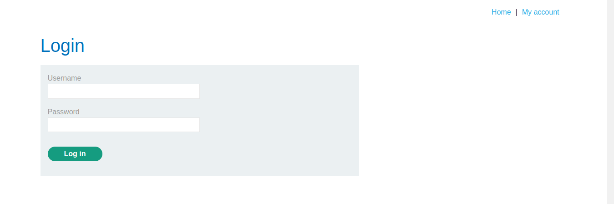
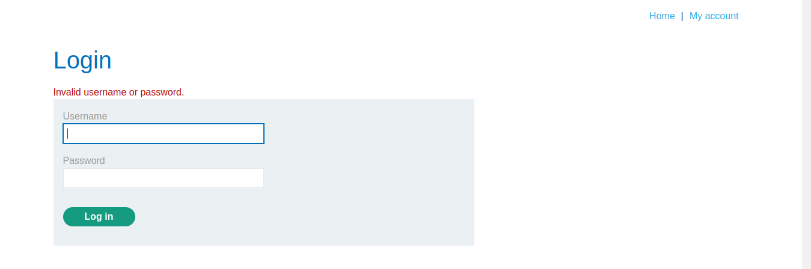

بدون معطلی بیشتر، بیایید مستقیماً به فرآیند بپردازیم و کار خود را شروع کنیم.
بر اساس اطلاعات ارائه شده، هدف ما انجام حمله تزریق SQL (SQLi) است که به ما اجازه میدهد به عنوان مدیر سیستم وارد شویم.
بعد از کلیک کردن بر روی دکمه ACCESS THE LAB، صفحه زیر به شما نمایش داده میشود:
از آنجا که هدف ما ورود به عنوان مدیر است، باید راهی برای دور زدن نیاز به ارائه اطلاعات ورود پیدا کنیم.
تنها گزینههای پیمایشی قابل مشاهده در این صفحه HOME و MY ACCOUNT هستند.
از آنجا که ما به طور پیشفرض در صفحه Home هستیم، گام منطقی بعدی این است که به بخش MY ACCOUNT برویم.
در صفحه MY ACCOUNT، رابط ورود زیر را مشاهده خواهید کرد:
فرم ورود درخواست نام کاربری و رمز عبور میکند. برای این مثال، نام کاربری را administrator وارد میکنیم و از یک رمز عبور تصادفی مانند RANDOMPASSWORD استفاده میکنیم:
از این پاسخ میتوان نتیجه گرفت که وقتی مقادیر نام کاربری و رمز عبور را ارسال میکنیم، سرور ورودیها را از طریق یک پرسوجوی SQL پردازش میکند. اگر مقادیر با هیچ رکورد موجودی مطابقت نداشته باشد، سرور پیام خطا با مضمون: «نام کاربری یا رمز عبور اشتباه است.» ارسال میکند.
پرسوجوی ارسالشده به سرور ممکن است به شکل زیر باشد:
SELECT * FROM users WHERE username = 'administrator' AND password = 'RANDOMPASSWORD';
در مرحله بعد، بار تزریقی خود را وارد میکنیم. با افزودن ساده (--') به ورودی، میتوانیم پرسوجوی SQL را اصلاح کنیم. بعد از این تنظیم، پرسوجو به شکل زیر خواهد بود:
SELECT * FROM users WHERE username = 'administrator'--' AND password = 'RANDOMPASSWORD';
در این پرسوجوی اصلاحشده، دنباله -- برای کامنتگذاری باقیمانده پرسوجو استفاده میشود. این به طور مؤثر شرط رمز عبور را نادیده میگیرد، زیرا پرسوجو فقط نام کاربری که به عنوان administrator تنظیم شده است را بررسی میکند.
برای سادهسازی، پرسوجوی نهایی اکنون به این شکل است:
SELECT * FROM users WHERE username = 'administrator';
بخش باقیمانده پرسوجو به عنوان کامنت در نظر گرفته میشود و بنابراین نادیده گرفته میشود. این به ما اجازه میدهد احراز هویت رمز عبور را دور بزنیم و با موفقیت به عنوان مدیر وارد شویم.
برای دریافت جدیدترین اخبار و منابع، به من در تلگرام بپیوندید! به تلگرام بپیوندید
بعدی: SQLi | آزمایشگاه - 3